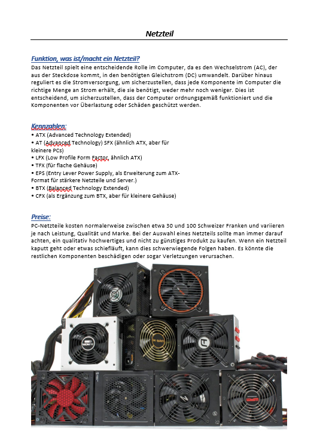
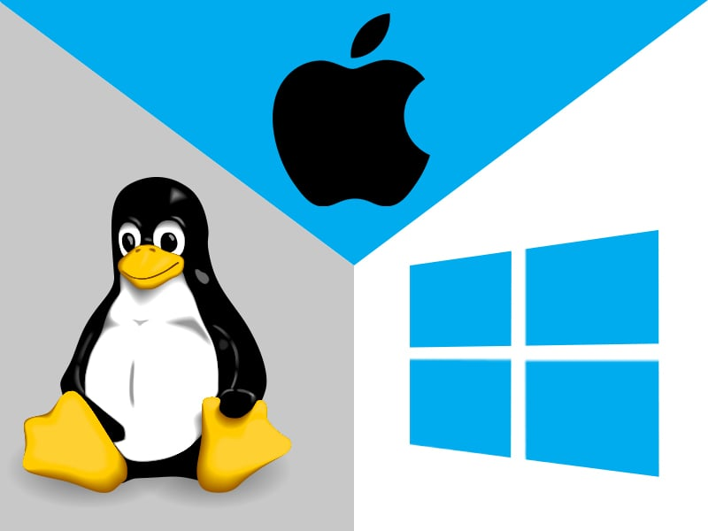

Hardware

Was ist und was macht die Hardware?
Hardware
Hardware bedeutet wörtlich "harte Ware" und bezeichnet alle physischen Komponenten,
einschließlich der elektronischen und mechanischen Teile,
eines datenverarbeitenden Systems wie einem PC.
Um es einfacher zu erklären, sind dies alle Teile,
die man an einem PC physisch berühren kann.
Ein PC kann grundlegend funktionieren und laufen,
ohne all die teuren Zusatzkomponenten,
die wir manchmal für notwendig halten.
Alles, was wirklich benötigt wird, sind:
- MB (Mainboard)
- CPU (Hauptprozessor)
- RAM (Arbeitsspeicher)
- HDD/SSD (Festplatten)
- GPU (Grafikprozessor)
- PSU (Netzteil)
Die Hardware in einem PC beeinflusst,
wofür der PC verwendet werden kann.
Wenn man einen PC für WQHD Gaming kaufen möchte,
benötigt man andere Komponenten als für den Büroeinsatz oder das Schneiden und Rendern von Videos.
Die Hardware bestimmt die Leistungsfähigkeit des PCs und für welche Aufgaben er geeignet ist.
Wenn man mehr investiert,
erhält man in der Regel auch mehr Leistung,
aber es ist wichtig,
klug vorzugehen und die Komponenten so auszuwählen,
dass sie aufeinander abgestimmt sind,
um die beste Leistung aus dem Budget herauszuholen.
Fazit
Das Thema Hardware war interessant, obwohl es viel Wiederholung gab.
Ein Großteil davon hatten wir bereits im BLJ mit Andreas oder Jörg behandelt.
Dennoch habe ich Neues gelernt,
insbesondere über verschiedene Kabeltypen,
deren Schnittstellen und Verwendungszwecke.
Das Thema hat mir gefallen,
obwohl es manchmal etwas langweilig war,
da wir es bereits zuvor behandelt hatten.
Betriebssysteme

Was macht das Betriebssystem und was ist ein Kernel?
Das Betriebssystem und der Kernel
Das Betriebssystem verwaltet die Systemressourcen eines Computers,
darunter Festplatten, Arbeitsspeicher und Ein- und Ausgabegeräte.
Zudem stellt es Anwendungsprogrammen wie beispielsweise Roblox diese Ressourcen zur Verfügung.
Das Betriebssystem fungiert als Vermittler zwischen der Hardware und den Anwendungsprogrammen,
wodurch diese miteinander kommunizieren können.
Das funktioniert alles über den Kernel.
Der Kernel ist der zentraler Bestandteil des Betriebssystems und übernimmt die Prozess- und Datenorganisation,
auf der die weiteren Softwarekomponenten eines Betriebssystems aufbauen.
Der Kernel hat direkten Zugriff auf die Hardware und bildet die unterste Softwareschicht des Systems.
Die Aufgaben eines Kernels sind:
- Schnittstelle zu Anwenderprogrammen (Starten, Beenden, Ein-/Ausgabe, Speicherzugriff)
- Kontrolle des Zugriffs auf Prozessor, Geräte, Speicher (Scheduler, Gerätetreiber, Speicherschutz). Möglichst alleiniger Zugriff des Kernels auf diese Ressourcen.
- Verteilung der Ressourcen wie zum Beispiel der Prozessorzeit bzw. der Prozessoren auf die Anwenderprogramme.
- Strukturierung der Ressourcen, etwa Abbildung von Dateisystemen auf blockorientierte Geräte wie Festplattenlaufwerke, Netzwerkstack auf Netzwerkkarten.
- Auflösung von Zugriffskonflikten, etwa Verriegelung bei Mehrprozessorsystemen, Warteschlangen bei knappen Ressourcen.
- Virtualisierung der Ressourcen (Prozessor: Prozesse, Festplatte: Dateien, Netzwerkkarte: z. B. Sockets, Speicher: virtueller Speicher, Geräte: Spezialdateien).
- Überwachung von Zugriffsrechten auf Dateien und Geräte bei Mehrbenutzersystemen.
Fazit
Mir hat das Thema sehr gefallen,
und es war auch sehr spannend.
Ich habe mehr Neues gelernt als im ersten Thema,
und die Aufträge fand ich auch interessanter,
da wir wirklich praktisch gearbeitet haben.
Wir mussten herausfinden,
was ausgetauscht werden musste,
wie wir das Betriebssystem installieren,
haben dann alles ausgetauscht,
installiert und zusätzliche Aufgaben auf der fertig installierten VM durchgeführt.